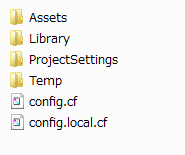

CAssetBundleMgrについて¶
CMainSystemのAwake内でAddComponentしてください。
アセットバンドルを読み込んだりキャッシュしたりするためのマネージャです。
自前のマネージャを用意するときは、不必要です。
最初に、version.unity3dをダウンロードし、各アセットのバージョンを取得します。
バージョンが異なっているときはローカルにキャッシュされたデータを捨て、ダウンロードしてきます。
次のような特徴を持っています。
- アセットバンドルはバージョン管理されており、一度読み込んだものはキャッシュから読み込むようになっている(WWW.LoadFromCacheOrDownload)
- 読み込んだアセットバンドルはメモリにキャッシュする
- シーン切り替え時に、キャッシュを解放する
- 常駐フラグが付いているアセットバンドルは解放せず保持する
- Windows,Mac上では設定ファイルによって読み込み先を切り替え可能(ローカルのファイルでも可)
- 扱えるアセットバンドルの名前は、 マルチID .unity3dというフォーマットに限る
CAssetBundleMgr¶
-
const int
MaxConcurrentLoadNum¶ 同時にダウンロードする最大数
この数を超えて、LoadFromCacheOrDownloadを同時に発行しないようになっています。
デフォルト値は、1になっています。
-
const long
MaximumAvailableDiskSpace¶ ローカルディスクへの最大キャッシュサイズを指定します。
デフォルト値は、512 * 1024 * 1024(512Mbyte)になっています。
-
static string
httpServerPath¶ HTTPアドレスを指定します。
-
static string
debugPath¶ デバッグ用パスを指定します。 Windows,Mac環境でのみ有効です。 こちらを指定しておくと、そのパスを優先してファイルを読み込みます。
注釈
デバッグパスを経由して読み込んだファイルは、ローカルディスクへのキャッシュを行いません。
-
int
lastError¶ 最後に発生したエラー番号が入っています。
-
int
errorMessage¶ 最後に発生したエラーメッセージが入っています。
-
CAssetBundle[]
lodings¶ 現在ダウンロード中のアセットバンドルのリストが返ってきます。
ダウンロードをペンディングしているものもこのリストに含まれます。
-
int
loadNum¶ 現在ダウンロード中のアセットバンドルの数が返ってきます。
ダウンロードをペンディングしているものも数に含まれます。
-
CAssetBundleMgr
Instance¶ マネージャのインスタンスを取得します。
-
CAssetBundle
reference(uint id)¶ アセットバンドルを参照します。 もし、キャッシュされていないときは、ダウンロードします。
ダウンロード済みでなくてもアセットバンドルが存在するときは、CAssetBundleを返します。
返ってきたCAssetBundleがダウンロード中かどうかは、CAssetBundle.isLoadedによって判別可能です。
trueの時、使用可能になっています。
nullが返ってくるときは、アセットバンドルがそもそも存在しないときです。
-
bool
isExist(uint id)¶ アセットバンドルが存在するかどうか調べます。
-
void
startPreload()¶ 呼び出すと、存在するアセットバンドル全てをダウンロードし、ローカルディスクにキャッシュしようとします。
-
void
loadAssetVersion()¶ アセットバージョン(version.unity3d)をダウンロードしなおし、アセットバンドルのキャッシュを更新します。
-
void
releaseAll()¶ 常駐/非常駐に関わらず、全てのアセットバンドルを解放します。
解放後は、loadAssetVersionを呼び出す必要があります。
CAssetBundle¶
AssetBundleにキャスト可能です。
-
AssetBundle
get()¶ 保持しているAssetBundleを取得します。
-
uint
id¶ IDを取得します。
-
bool
isLoaded¶ trueなら読み込み済みです。
-
bool
isRemain¶ 常駐しているかどうか調べます。
ローカルのファイルを読み込む際のパス変更方法¶
Windows,Mac上でのみ有効です。
最初にAssetsフォルダと同じ場所に次のファイルを作る。

- config.cf
- config.local.cf
読み込まれる順番は、config.cf => config.local.cfの順番になります。
後で設定したものが上書きされます。
config.cfに次のように記述しておきます。
#
# config.cf
#
DEBUG_PATH = ../../../unified/AssetBuilder/assetbundles/Windows
CMainSystemのAwake内で次のように設定します。
//==========================================================================
/*!Awake
* @brief Unity Callback
*/
new void Awake() {
base.Awake();
if (m_instance != null) {
Debug.LogError("already exist CMainSystem");
return;
}
m_instance = this;
#if !(UNITY_IPHONE || UNITY_ANDROID || UNITY_WEBPLAYER)
CAssetBundleMgr.debugPath = CConfig.Instance.get ("DEBUG_PATH","../Debug/");
#endif
gameObject.AddComponent<CAssetBundleMgr>();